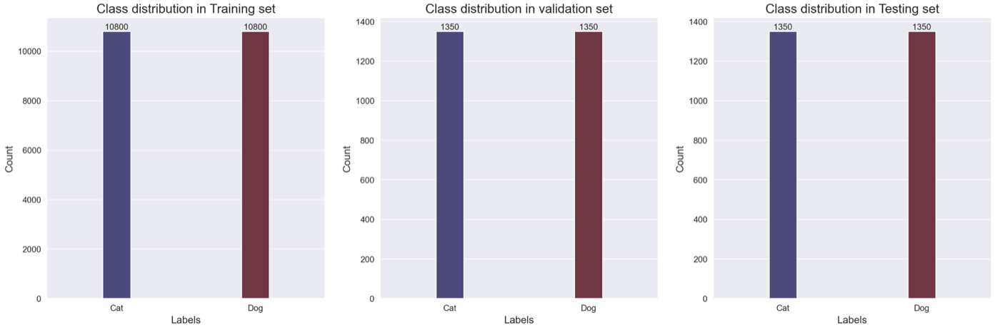
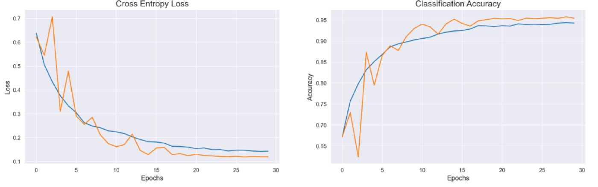
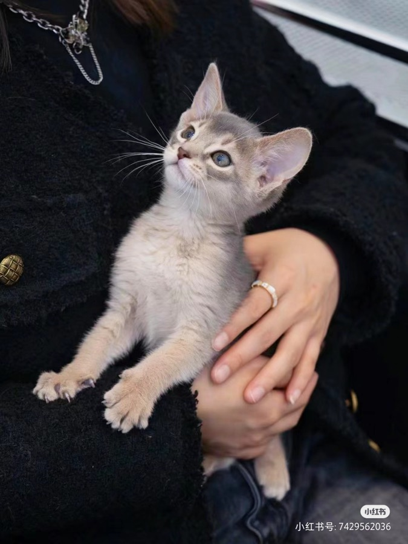
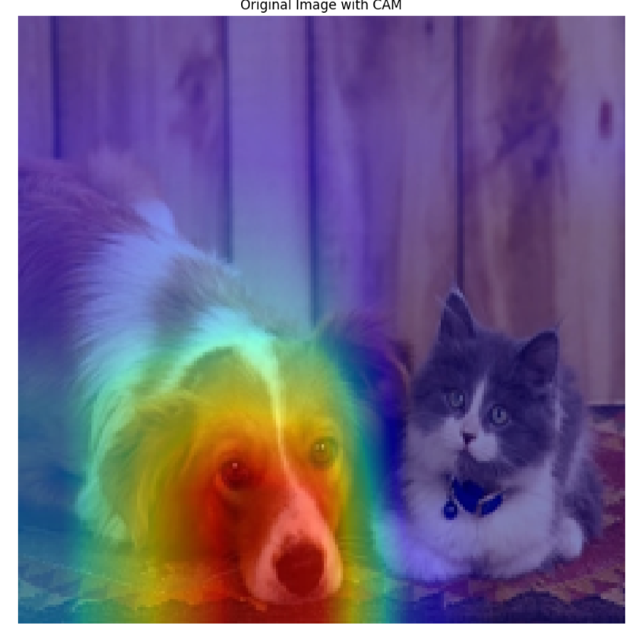

动漫增益没有被量化
课件结论称「动漫图上的准确率有所提升」，但变体 B 从未在纯动漫图像上单独测过，这个说法没有数字支撑；可确认的只有真实图精度的下降。
−1.19 pp test−1.23 pp val
COMPUTER VISION · CNN
从零搭建卷积网络，并做了一次「加入动漫图像」的对照实验——结论是负面的，但我把原因也一并写清楚。
课程大作业 · 图像识别
25,000 张实拍图的基线模型，与加入 2,000 张动漫图后的对照
不使用任何预训练权重，用 Keras 逐层搭出 4 个卷积块的网络：图像统一到 128×128，训练时做旋转、缩放、翻转增强，配合学习率衰减与早停。基线模型在纯真实图上取得测试准确率 95.12%；随后按同样的架构与流程，把自行爬取的 2,000 张动漫猫狗混入训练集重训，测试准确率降到 93.93%。
对照实验
两次训练使用完全相同的架构、增强策略与回调配置，唯一变量是训练集里有没有那 2,000 张动漫图。
| 指标 | 变体 A · 纯真实图 | 变体 B · 真实 + 动漫 |
|---|---|---|
| 图像总量 | 25,000 | 27,000（+2,000） |
| 实际训练轮数 | 30 | 40（配置 60，早停触发） |
| 训练准确率 | 96.39% | 94.65% |
| 验证准确率 | 95.56% | 94.33% |
| 测试准确率 | 95.12% | 93.93% |
结论：加入动漫数据后，模型在真实图像上的准确率下降了约 1.2 个百分点。课件里曾把 94.32% 与 93.93% 当作两个模型对比，实际上这两个数字都属于变体 B（前者是验证集、后者是测试集）。
课件结论称「动漫图上的准确率有所提升」，但变体 B 从未在纯动漫图像上单独测过，这个说法没有数字支撑；可确认的只有真实图精度的下降。
变体 B 的 2,700 张测试集里混入了约 200 张动漫图，因此 93.93% 是「真实 + 动漫」的混合精度，与变体 A 的纯真实 95.12% 并非同一把尺子——这也是我复盘时最该早点发现的问题。
数据集
Kaggle 基线保证可比性，动漫部分没有现成数据集，只能自己爬取并人工筛选。
Kaggle Dogs vs Cats 标注集，猫狗各 12,500 张，类别严格 1:1，覆盖各种姿态、光照与背景。
用爬虫从抖音、小红书、知乎等社交平台、动漫漫画与微信表情包中收集并人工筛选，共 2,000 张（每类 1,000）。网络缺乏现成标准数据集，因此风格差异很大。
动漫图被重命名为 cat.*/dog.* 序列接在原编号之后（12,500 起），与实拍图混在同一目录，靠文件名前缀取标签。



数据集样本（每张压缩到 900px 以内，仅供预览）。
模型与训练
通道数逐块加倍，每块都带批归一化与 Dropout，全部参数从随机初始化开始训练。
网络结构
训练配置
复盘与反思
比"跑出 95%"更有价值的，是能说清哪些结论站不住、以及下次该怎么设计。
动漫图与实拍图混合后随机划分，约 200 张动漫图落进了测试集，导致两个变体的测试分数不可直接比较。正确做法是固定同一份纯真实测试集，动漫图只进训练集。
既然加动漫数据是为了提升动漫图识别，就该单独构造一份动漫测试集来验证。缺少这一测，结论只剩「真实图变差了」，动漫增益无法证实。
可视化计划只完成了一张真实照片的热力图，没有覆盖计划中的三张图，更没有任何定量指标。它只能算作初步尝试，不足以支撑任何关于"关注纹理"的结论。
训练/验证集用随机数切分而非按类别分层，导致两类样本数略有偏差；两个模型的权重文件字节数完全相同、命名无法区分；课件中还存在把同一模型的验证与测试分数当作两个模型对比的笔误。

工程拆解
数据探索、生成器增强、模型搭建、回调训练、预测提交与结果可视化，都在同一个 Notebook 内完成。
统计类别分布与图像尺寸分布，用 DataFrame 与目录两种方式划分训练、验证与测试集，并确认真实图与动漫图都按 1:1 混入。
ImageDataGenerator 归一化到 0–1，训练集叠加六项几何变换，验证集只做归一化，避免评估偏差。
ReduceLROnPlateau 在平台期衰减学习率，EarlyStopping 恢复最优权重，完整保留逐轮学习率变化记录。
载入保存的模型批量预测 12,500 张测试图，输出 id/label 提交文件（6,366 猫 / 6,134 狗），并对难例做错误分析。